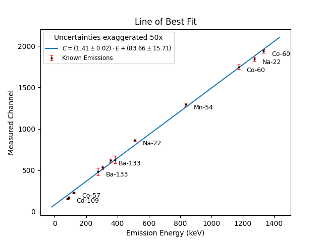
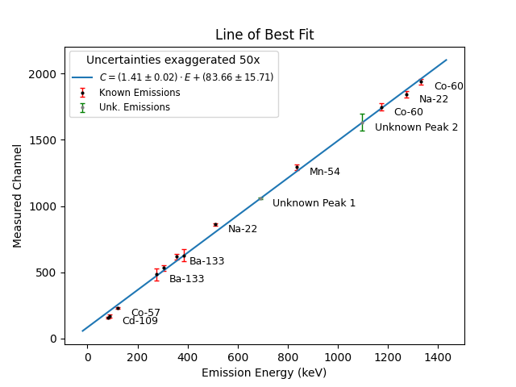

Plotting the Known Data
As mentioned previously, the relationship between the mean channel numbers that we find and the actual emission energy levels should be a linear one. This means that we'll be using the equation of a line:
We can now plot our data with the found channel numbers, C, along the y-axis, and the known emission energies, E, along the x-axis, giving us:
We should be able to fit all of our data to this line. After doing this, we can simply plug the mean channel numbers for the peaks of our unknown source into this line to find what the emission energies of the source are, along with an estimate of their uncertainties.
When we're done finding the peaks of all of our data, our value_bank should look like:
value_bank = {
('Na-22', Na_22P1_mu, Na_22P1_mu_uncert, 511),
('Na-22', Na_22P2_mu, Na_22P2_mu_uncert, 1274.54),
('Mn-54', Mn_54P1_mu, Mn_54P1_mu_uncert, 834.84),
('Co-57', Co_57P1_mu, Co_57P1_mu_uncert, 122.06),
('Co-60', Co_60P1_mu, Co_60P1_mu_uncert, 1173.23),
('Co-60', Co_60P2_mu, Co_60P2_mu_uncert, 1332.49),
('Cd-109', Cd_109P1_mu, Cd_109P1_mu_uncert, 88.03),
('', Ba_133P1_mu, Ba_133P1_mu_uncert, 81),
('Ba-133', Ba_133P2_mu, Ba_133P2_mu_uncert, 276.4),
('', Ba_133P3_mu, Ba_133P3_mu_uncert, 302.85),
('Ba-133', Ba_133P4_mu, Ba_133P4_mu_uncert, 356.01),
('', Ba_133P5_mu, Ba_133P5_mu_uncert, 383.85),
}
NOTE: Only two of the Ba-133 peaks are labelled. This is because they are so close to themselves and other isotopes that their labels would overlap if kept.
In order to handle the known peaks separately from our unknown ones, we've also created a separate bank for the peaks from the unknown source:
unknown_values = {
('Unknown Peak 1', unknown_P1_mu, unknown_P1_mu_uncert),
('Unknown Peak 2', unknown_P2_mu, unknown_P2_mu_uncert)
}
To plot our known peaks, we'll create a for loop to go through value_bank and separate everything into their own arrays. We'll first initialize our arrays and then append the values into them with our loop. As the uncertainties are pretty small, we'll also want to amplify them so that they'll be visible when plotted. This should be fine as long as we note this exaggeration somewhere in our plot.
uncertainty_scale = 50
labels = []
tested_means = []
tested_uncertainty = []
known_peaks = []
for (label, tested, uncertainty, known) in value_bank:
labels.append(label)
tested_means.append(tested)
tested_uncertainty.append(uncertainty * uncertainty_scale)
known_peaks.append(known)
With known_peaks and tested_means now separated, we can use scipy's linregress to calculate the slope and intercept of our line, as well as their respective margins of error:
result = linregress(known_peaks, tested_means)
slope = result.slope
intercept = result.intercept
stderr = result.stderr
intercept_err = result.intercept_stderr
We can now plot our data so far to make sure everything is going according to plan. If you followed along with this lesson and found the peak values separately, here is when it will be possible to see if you made an error while selecting peaks that you can go back and correct.
For plotting the line of best fit, we'll first create a line which uses the calculated slope and intercept values along with np.linspace. We'll add some space on either side of our max and min values to give our data points some visual breathing room. Then we can plot our error bars, display our labels for each data point, and plot our data, the line of best fit, and label our axes:
# Create the line of best fit
x_line = np.linspace(min(known_peaks)-100, max(known_peaks)+100, 100)
y_line = slope*x_line + intercept
# Plot error bars
plt.errorbar(
known_peaks, tested_means,
yerr=tested_uncertainty,
fmt='o', markersize=2, color='black',
ecolor='red', elinewidth=1, capsize=2,
label='Known Emissions'
)
# Show labels next to their respective data points
for x, y, label in zip(known_peaks, tested_means, labels):
plt.text(x+50, y, label, fontsize=9, ha='left', va='top')
# Plot best fit line and data points
plt.scatter(known_peaks, tested_means, s=1)
plt.plot(x_line, y_line, label=f'$C=({slope:.2f}\pm{stderr:.2f})\cdot E+({intercept:.2f}\pm {intercept_err:.2f})$')
plt.xlabel('Emission Energy (keV)')
plt.ylabel('Measured Channel')
plt.title('Line of Best Fit')
plt.legend(title=f'Uncertainties exaggerated {uncertainty_scale}x', fontsize='small')
plt.show()
Output:

Plotting the Unknown Isotope
In order to find the emission energies for our unknown isotope, we'll have to rearrange our linear equation to solve for E. As \(C=mE+b\):
Now that we have our slope and intercept from the results of linregress, we can start finding our unknown energy values as well as their uncertainties. We're looking for the uncertainties in the unknown energy as it is possible that when we search gamma tables to try and find our isotope we may get multiple energy results near our central peak. To find the energy uncertainties, we'll have to use error propagation.
Error Propagation
For a given function:
Where each variable \(x_i\) has an uncertainty \(\sigma_{x_i}\), the uncertainty in f, \(\sigma_f\), can be found as:
As we're looking for \(\sigma_E\), this means our equation will look like:
We can now use all of this information to include our unknown isotopes in the plot as well as return the possible emission energy ranges. First, we'll want to create our new arrays for the labels, the means and uncertainties, and their associated energy values. We can also print out our energy values so that we can later compare the ranges to gamma tables:
unknown_labels = []
unknown_means = []
unknown_uncertainties = []
predicted_energies = []
predicted_uncertainty = []
unknown_values = [
('Unknown Peak 1', unknown_P1_mu, unknown_P1_mu_uncert),
('Unknown Peak 2', unknown_P2_mu, unknown_P2_mu_uncert)
]
for label, tested, uncertainty in unknown_values:
unknown_labels.append(label)
unknown_means.append(tested)
unknown_uncertainties.append(uncertainty)
# Convert to energy
energy = (tested - intercept) /slope
energy_uncertainty = np.sqrt(
((uncertainty/slope)**2) +
((-intercept_err/slope)**2) +
((-(tested-intercept)*stderr/(slope**2))**2)
)
predicted_energies.append(energy)
predicted_uncertainty.append(energy_uncertainty)
print(f'{label}: {energy:.2f} keV +/- {energy_uncertainty:.2f} keV')
print(f'({energy-energy_uncertainty:.2f} keV to {energy+energy_uncertainty:.2f} keV)')
Output:
Unknown Peak 1: 690.28 keV +/- 15.45 keV
(674.83 keV to 705.73 keV)
Unknown Peak 2: 1097.36 keV +/- 20.35 keV
(1077.00 keV to 1117.71 keV)
As we needed the non-exaggerated uncertainties to accurately calculate the energy ranges, we'll exaggerate them elsewhere and use that new array for plotting. Let's go ahead and plot our error bars and add these data points to our plot:
exagg_unk = [u * uncertainty_scale for u in unknown_uncertainties]
plt.errorbar(
predicted_energies, unknown_means,
yerr=exagg_unk,
fmt='o', markersize=2, color='grey',
ecolor='green', elinewidth=1, capsize=2,
label='Unk. Emissions'
)
for x, y, label in zip(known_peaks, tested_means, labels):
plt.text(x+50, y, label, fontsize=9, ha='left', va='top')
for x, y, label in zip(predicted_energies, unknown_means, unknown_labels):
plt.text(x+50, y, label, fontsize=9, ha='left', va='top')
plt.scatter(known_peaks, tested_means, s=1)
plt.scatter(predicted_energies, unknown_means, s=1)
plt.plot(x_line, y_line, label=f'$C=({slope:.2f}\pm{stderr:.2f})\cdot E+({intercept:.2f}\pm {intercept_err:.2f})$')
plt.xlabel('Emission Energy (keV)')
plt.ylabel('Measured Channel')
plt.title('Line of Best Fit')
plt.legend(title=f'Uncertainties exaggerated {uncertainty_scale}x', fontsize='small')
plt.show()
Output:

Finding Matching Isotopes
An important thing to note when trying to find which isotopes our unknown source could potentially be, is that we've never specified that the source contains only one isotope. It's entirely possible that it has two isotopes that have our observed peaks instead.
In searching for our source, we'll be using the website https://atom.kaeri.re.kr/old/gamrays.html. Here, we can enter our energy range as well as a half-life, and receive an output of multiple isotopes. As the sources had not been changed in multiple years at UCDenver, we can estimate a half-life of at least two months.
Using this tool, our found energy ranges, and an estimated half-life minimum of 60 days, the matches we find for our first peak are:
| Nuclide | Energy (keV) | Half-Life |
|---|---|---|
| Pm-144 | 696.49 | 363 D |
| Nb-94 | 702.622 | 20400 Y |
And for our second peak, we get the matches:
| Nuclide | Energy (keV) | Half-Life |
|---|---|---|
| Sn-123 | 1088.64 | 129.2 D |
| Te-121 | 1102.15 | 164.2 D |
| Zn-65 | 1115.55 | 243.93 D |
As this information provides us with no overlapping options, this means that we will have to compare each of the first two options against each of the second three options in order to determine which combination of isotopes our source most likely contained.
In order to perform this final analysis, we'll need to perform something known as a \(\chi^2\) (or chi-squared) fit. Click here to continue on to our next section where we will learn how to use such fits to assess the quality of our findings.